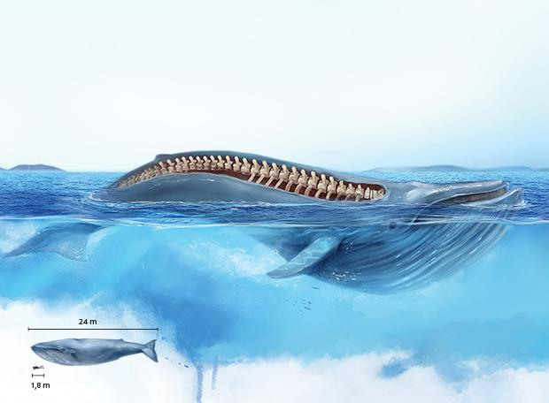
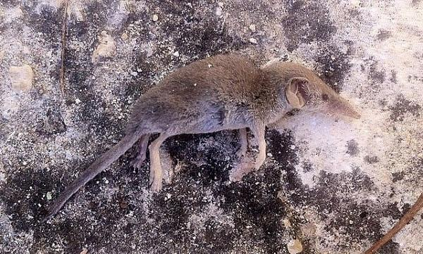

Mamiferos
Principais características
Homeotérmicos: capacidade de controle interno de temperatura.
Possuem glândulas mamárias, as fêmeas nutrem seus filhotes.
Suas crias nascem filhotes formados (viviparidade).
Presença de pelos (pelo menos em uma fase da vida).
Palato secundário (céu da boca): O palato secundário permite que o mamífero mastigue enquanto respira ou mame enquanto respira.
Demais características
Tegumento c/ 4tipos de glândulas: sudoríparas, odoríferas, sebáceas e mamárias
Crânio c/ 2 côndilos occipitais
Ouvido médio c/ 3ossículos (estribo, bigorna e martelo)
7 vértebras cervicais
Dentição “difiodonte” (duas dentições: uma decídua (dente de leite) e outra permanente.
Dentição heteroconta(dentição diferenciada)
Pálpebras móveis e orelhas carnudas
Quando e como e surgiram os mamíferos?
Final do paleozóico(225 ma) até início do mesozóico
Sinapsida–divergiu da árvore genealógica dos répteis muito próximo à sua base parentesco remoto.
Distribuição, adaptação e irradiação.
Os Primeiros Mamíferos (Mesozóico): Muito diferentes do que são hoje os mamíferos.
Início cenozóico: raros e pouco representativos. Pequenos (tamanho de ratos) e provavelmente noturnos devidos aos grandes répteis (a maioria diurnos). Pouca sobreposição em tamanho entre o maior mamífero e o menor dinossauro –140 ma que coexistiram.
Extinção dos dinossauros: marcou a ascensão dos mamíferos.
Segue abaixo algumas imagens de mamíferos primitivos:
Maior mamífero e o menor:
O maior mamífero da terra é a histórica baleia-azul. Ela atinge o comprimento de 33 m e pode pesar até 130 toneladas. Seu habitat são os mares gelados da Antártida e o norte dos oceanos Atlântico e Pacífico.

Já o titulo de menor mamífero do mundo é dividido entre o morcego chamado kitti e um roedor chamado musaranho-pigmeu.
